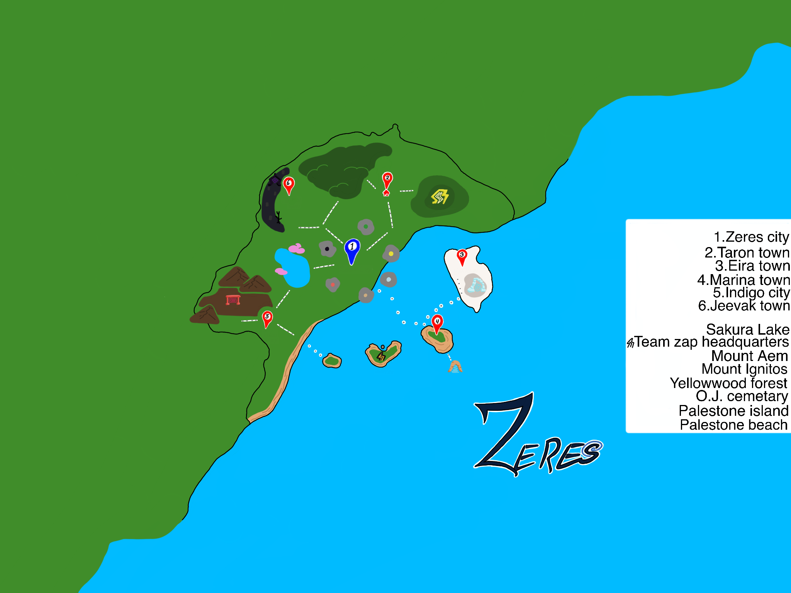
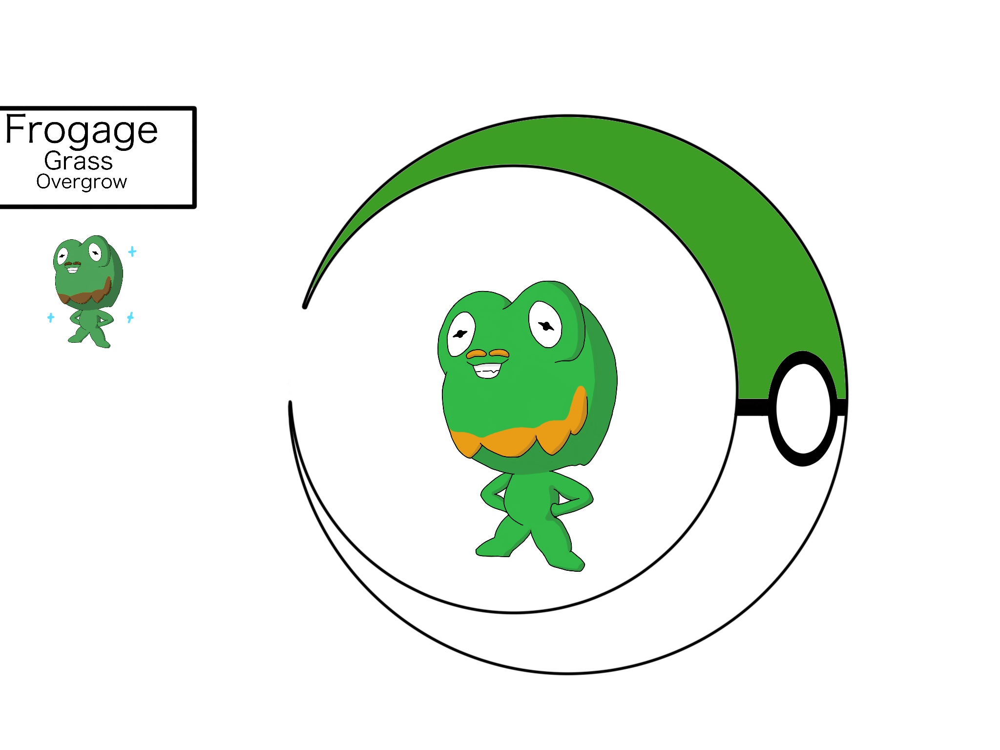
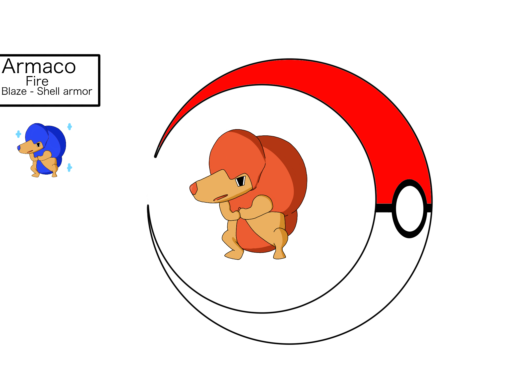
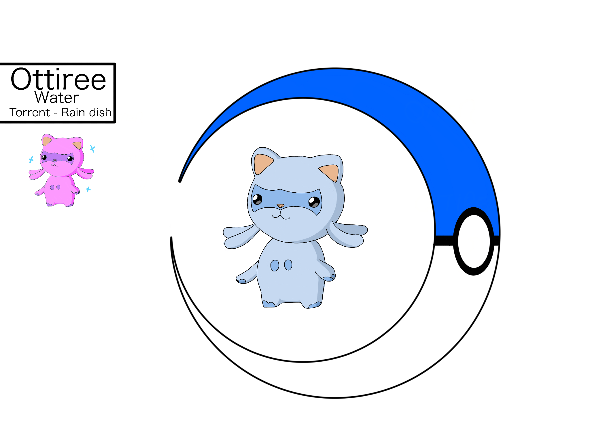

De region
Welkom in de Zeres region, een vrij kleine maar natuurrijke regio vol met wonderbaarlijke wezens genaamd pokemon. In deze regio vind je veel oude maar ook nieuwe pokemon die alleen te vinden zijn in onze regio. Onze professor Hawthorn en zijn medewerkers zal onze prachtigge regio van top tot teen laten zien.
De regio is een lange tijd geleden gemaakt door een eeuwen oude samenleving die wij de captilis noemen. Zij hebben de vijf portalen naar de vijf anderen rijken gemaakt.

Professor Hawthorn doet onderzoek naar een fenoneem genaamd realm traveling. In de zeres region zijn eeuwen geleden "Realm portals" gemaakt, niemand weet door wie en hoe de portalen werken. Door deze portalen kan je reizen naar vijf werelden, zo zijn er in het totaal dus zes als je aarde ook mee telt. Het eerste rijk dat is ondekt staat bekent als "The Storm", zoals de naam het al zegt is het in dit rijk altijd slecht weer. Als tweede werdt het rijk dat bekend staat als "The Islands" ontdekt, Dit rijk is oneindig lang en is alleen maar gevult met kleine eilandjes. Het derde rijk is "The Heat", een rijk dat wat minder levensvormen bevat dan alle andere, het is ook gevult met vulkanen en lava. Als vierde hebben we "The Cold", het tegenovergestelde van het vorige rijk. Dit rijk bevat veel levensvormen, deze levensvormen zijn wel een stukje groter. En tot slot hebben we "The Haunt", een rijk vol met vervloekten en geesten. Wetenschappers zeggen dat dit de plek is waar pokemon heen gaan wanneer ze overlijden. De professor is momenteel bezig met het onderzoeken van "Het laatste rijk" of wel "The Forgotten" genoemd, er is verder niks bekend over deze plek.

De pokemon

#1 Frogage: The Forest frog pokemon.
Frogage help the town people with collecting and chopping their wood,
but since they're very small they are still learning the technique.
Type: Grass
Ability: Overgrow
Height: 0.4m
Weight: 14kg
Evolutions: N/A

#4 Armaco: The small armadillo pokemon.
The big "Spheres" on Armaco's body seems to be some sort of firm armor made out of skin,
scientists found out the armor is filled with Extremely hot gasses that can make you relax.
Type: Fire
Ability: Blaze and Shell armor
Height: 0.5m
Weight: 11kg
Evolutions: N/A

#7 Ottiree: The otter like pokemon.
Many people believe Ottiree Descended from Oshawott and Buizel,
although a few years back scientists found out they are more close related to dragons than from otter like pokemon.
Type: Water
Ability: Torrent and Rain dish
Height: 0.5m
Weight: 16kg
Evolutions: N/A
Evil team
Een van de meest gevreesde teams van de Zeres region is team zap. Team zap heeft zich onderverdeelt in meerdere groepen, van A tot F en dan nog het hoofd team. Elk team heeft een bijbehoorend rijk die ze moeten ontdekken, zo heeft team A de aarde, team B "The isles", team C "The heat" Etc. Elk team heft hun eigen leider en die leiders hebben allemaal weer één hogere leider, de leider van het hoofdteam. Team zap wil elke "Protector" van alle rijken vangen, de reden hiervoor is nog onbekend.
Specials